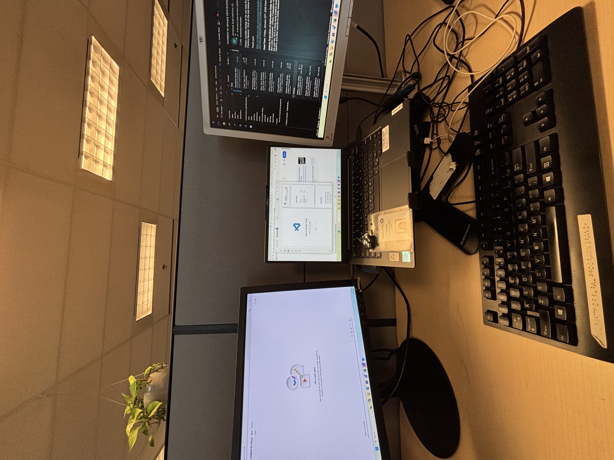
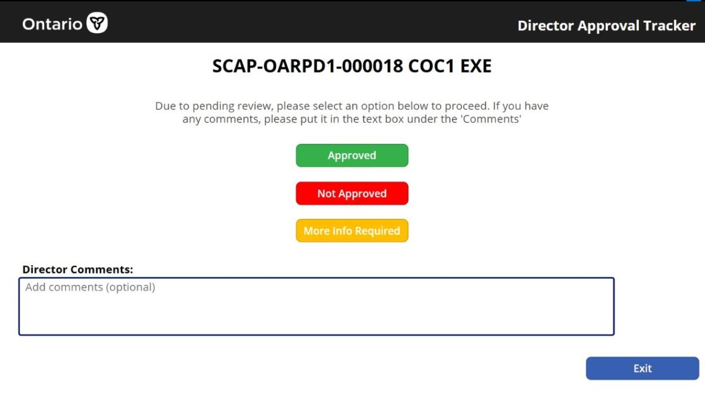

From January to May 2026, I have been working as a Junior Knowledge Management Coordinator in the Planning, Information and Coordination Services (PICS) team at the Ontario Ministry of Agriculture, Food and Agribusiness, part of the Ontario Public Service.
This report is my honest look at what I actually worked on and what I genuinely got out of it. The main project was building an automated approval process for staff requests from scratch, using Power Automate, SharePoint, and Power Apps. That one project ended up shaping most of what I learned this term, and this site walks through how it all came together.

Caption: Office Work Station
OMAFA is an Ontario government ministry that supports one of the most important parts of the provincial economy. Ontario's agri-food sector generates over 47 billion dollars annually and employs hundreds of thousands of people across the province. Getting placed here meant working somewhere that had real weight to it.
OMAFA supports Ontario's farmers, food processors, and agri-food businesses through programs, policies, and services. The ministry was created in 2024 when the former OMAFRA was reorganized into two separate ministries, each focused on distinct priorities.
The whole ministry runs on Microsoft 365. SharePoint is everywhere, Power Platform is used for internal automation, and there is significant data work happening across teams. My role ended up touching all three of those areas directly.
As part of the Ontario Public Service, OMAFA has thousands of staff working across the province. That scale changes how you think about the work. When you build something here, real people are going to depend on it every single day.
I wrote five goals before the term started. All five were met. The second one in particular grew into something much larger than I originally planned for.
The biggest lesson from this term had nothing to do with Power Automate. It was that the hardest part of automating a process is actually understanding the process first.
When I got there, staff requests for approval and procurement were handled through email chains. There was no consistent format, no way to track where a request stood, and approval times were unpredictable. I was asked to fix that. The solution was using a SharePoint Library to store and track every request, a Power Automate flow to handle routing, approvals, notifications, and escalations when approvals were taking too long, and a Power App where the Director would have a chance to actually accept/reject the approval. The system went live and is being used by staff today.

Caption: Screenshot of my Approval Process
I maintained and expanded the team's internal SharePoint documentation. This meant writing user guides for the approval system, organizing knowledge articles, and making sure information was actually findable when people needed it rather than buried somewhere.
I built reports and dashboards from SharePoint data so management could see request volumes, approval timelines, and where things were getting held up. It was the first time that information had been visible in one place for the team.
A big part of the job was sitting with different teams, understanding how they actually worked day to day, and figuring out what the approval system needed to do. That back and forth shaped the final product more than any technical decision did.
The approval system taught me that understanding always comes before building. I had to spend a lot of time just listening to people describe a process they had been running on instinct for years, and then figure out how to turn that into something a computer could follow every single time without error. That part was harder than anything I had to write in Power Automate. It is also the part I feel most proud of getting right.
I am leaving this term with skills I did not have before and a much clearer sense of what I am actually good at. I can build things that real people use. I can write documentation that real people read. And I now understand what it means to work inside a large government organization, with all the careful processes and sign-offs that come with that. I will carry all of it forward into the next four months of this coop.
Caption: OMAFA Logo
Thank you to my supervisor and everyone on the PICS team at OMAFA for giving me real work and trusting me to do it. I want to thank the staff who took time out of their own workday to walk me through processes they could have just handled themselves. And to the University of Guelph Co-op program for making this kind of hands-on experience part of what a computing degree actually looks like.